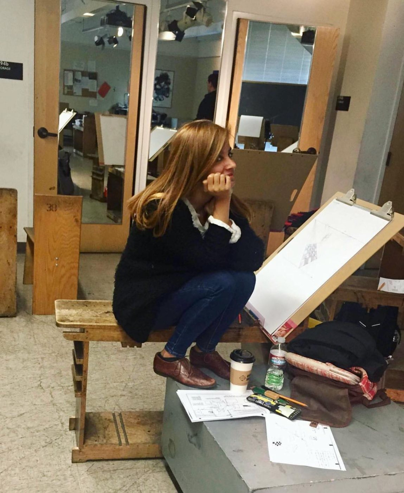
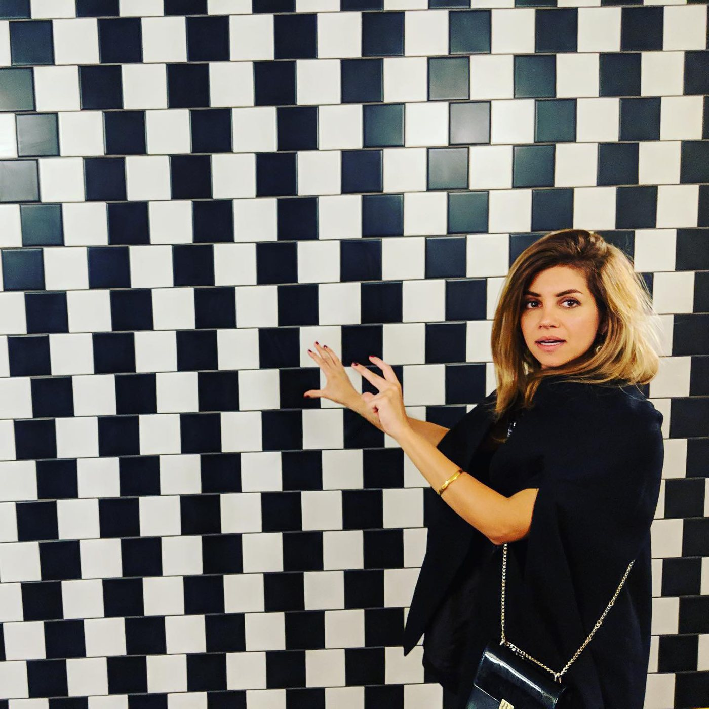

About Minu Azimi
Art

Before design, there was art: drawing, painting and mixed media. It taught me to notice how things feel as well as how they look. I still start most projects by hand, testing color, texture and form before anything reaches a screen.
Education

I studied Illustration at Scuola Internazionale di Comics in Rome. Illustration made me curious about how design shapes everyday life: the sign over a shop door, the bag you carry home, the label on a jar. That curiosity took me back to school for a second degree, in Graphic Design at San José State University.
Design

I’ve worked as a brand designer from the start, building identities, illustration systems, packaging and campaigns. Along the way I’ve taken on product design work too, from user research to wireframes and prototypes. It taught me to make brands that hold up wherever people meet them, on a shelf or on a screen.
I do my best work on energetic teams, bringing craft to the details and a clear sense of who the brand is for.
- Otto Family ClubVisual Designer, 2026–present
- RefactDesigner, 2024–2025
- DaseraDesigner (Contract), 2023–2024
- ChargeNet StationsLead Designer, 2020–2023
- Mark It As DoneVisual Designer, 2018–2020
- Applied MaterialsGraphic Design Intern, 2018
Contact
If you’d like to talk about a brand, a commission or design in general, I’d love to hear from you.